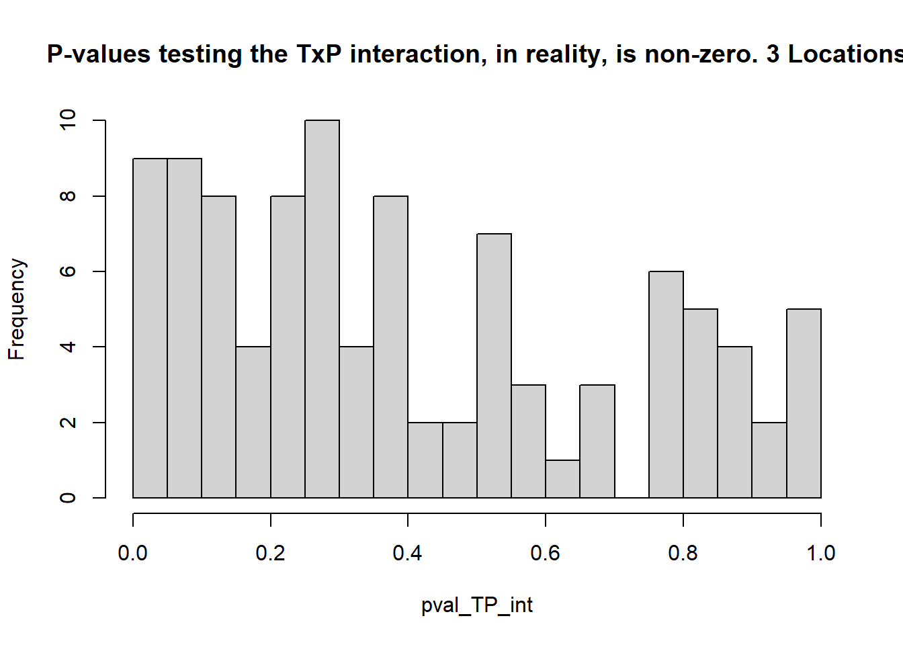
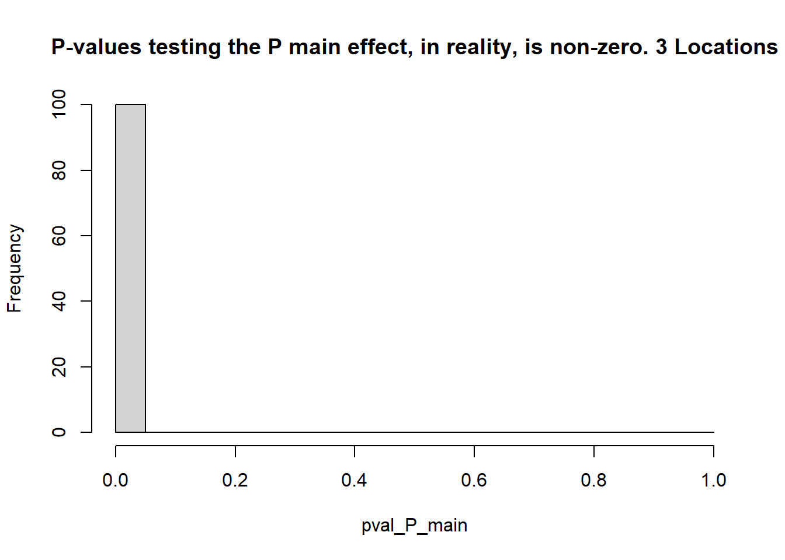
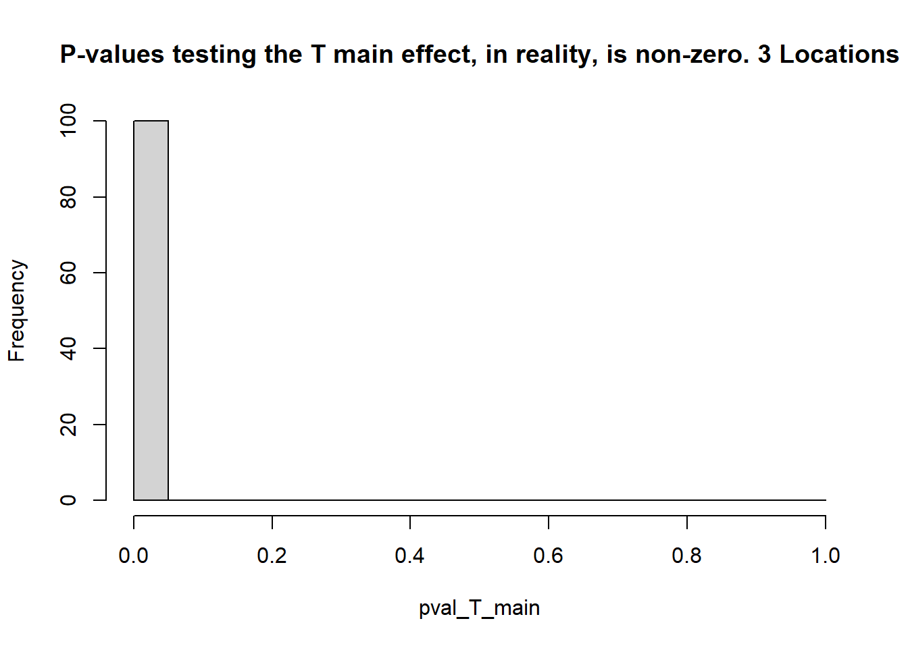
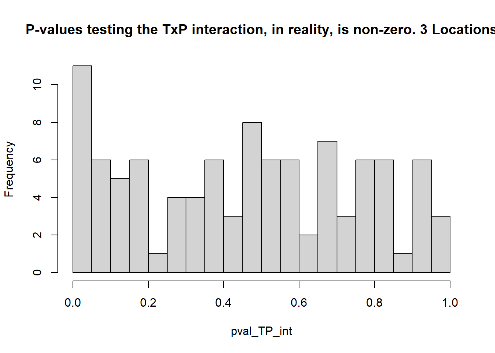
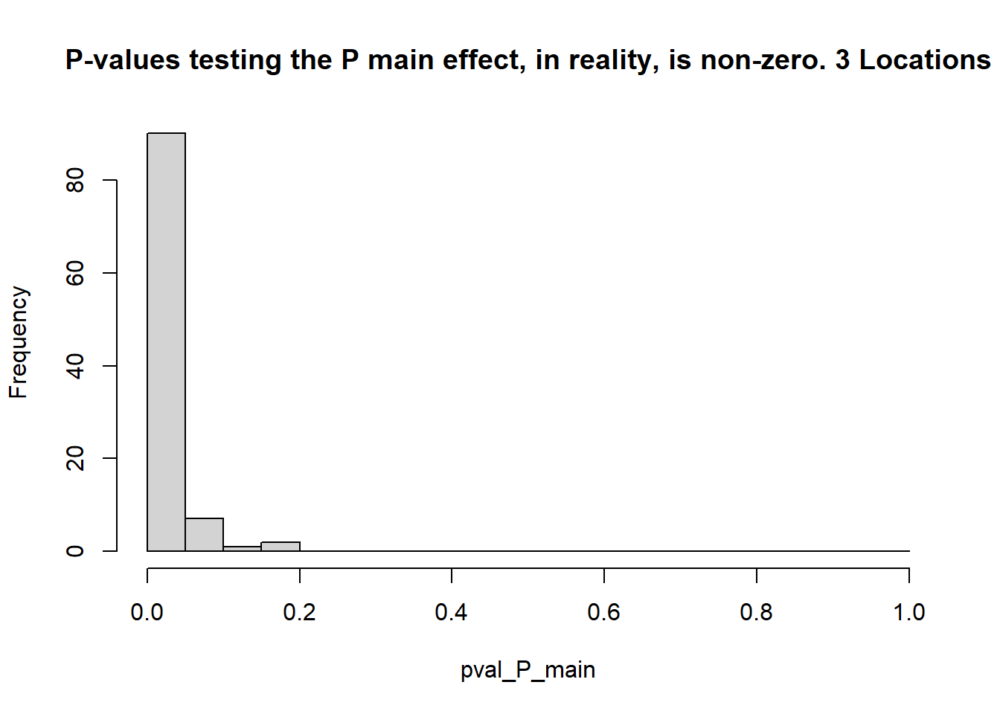
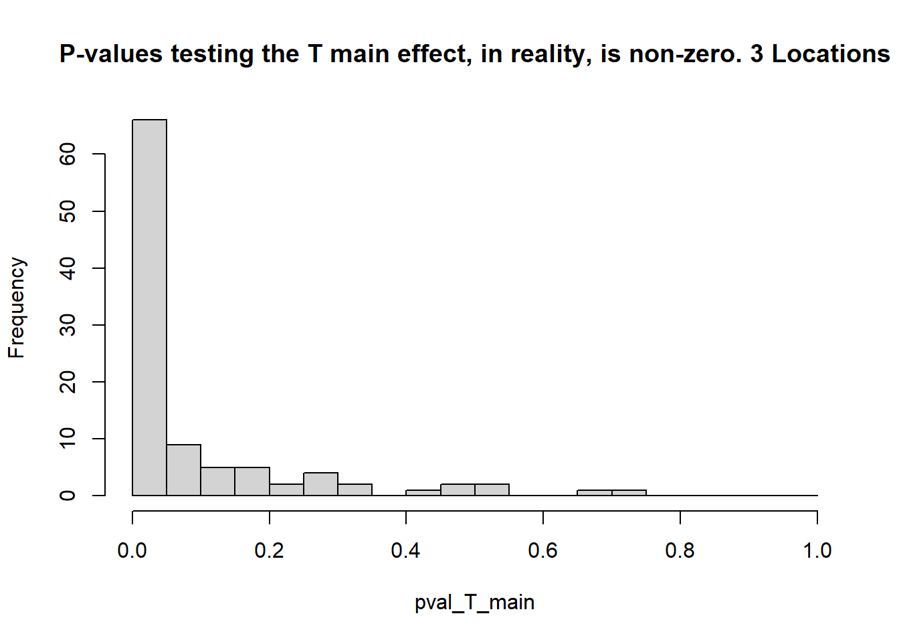

Day 29 Wrap-up II
29.1 Announcements
- Return your feedback tomorrow
- Please answer TEVALs! I’m very interested in your feedback
29.2 Planning a multi-location trial
- Objectives:
- Cover more variability in the target location
- Increase number of repetitions
- Different approaches to picking the multiple locations:
- Carefully select multiple locations
- Randomly(ish) select multiple locations within the target location
- How do both affect the response?
29.2.1 What do the results for different multi-location trials look like?
Below is a simulation comparing 3 different scenarios of multi-location trials with different number of locations tested. We assume that, within each location, the trial is an RCBD with three repetitions. [Context: this is perhaps the most common design in agronomy.]
We assume the following data generating process: \[y_{ijklm} = \mu_0 + T_i + P_j + TP_{ij} + L_k + b_{l(k)} + w_{i(kl)} + u_{j(ikl)} + \varepsilon_{ijklm}, \\ u_{m(ikl)} \sim N(0, \sigma_{u}^2)\\ w_{i(kl)} \sim N(0, \sigma_{w}^2) \\ b_{l(k)} \sim N(0, \sigma_{b}^2), \\ L_k \sim N(0, \sigma_{L}^2), \\ \varepsilon_{ijklm} \sim N(0, \sigma_{\varepsilon}^2),\] where:
- \(\mu_0\) is the overall mean,
- \(T_i\) is the effect of the \(i\)th temperature treatment,
- \(P_j\) is the effect of the \(j\)th pathogen,
- \(TP_{ij}\) is the effect of the interaction between the \(i\)th temperature and the \(j\)th pathogen,
- \(L_k\) is the effect of the \(k\)th location (\(k = 1,2,..., E\)), and
- \(b_{l(k)}\) is the effect of the \(l\)th block in the \(k\)th location (\(j = 1,2,3\)),
- \(w_{i(kl)}\) is the effect of the whole plot corresponding to the \(i\)th temperature in the \(l\)th block in the \(k\)th location (\(j = 1,2,3\)),
- \(u_{j(ikl)}\) is the effect of the split plot corresponding to the \(j\)th pathogen in the \(i\)th temperature in the \(l\)th block in the \(k\)th location (\(j = 1,2,3\)),
- \(\varepsilon_{ijk}\) is the residual for the observation corresponding to the \(i\)th treatment, \(j\)th block in the \(k\)th location.
For this simulation, we assume that all random effects arise from independent normal distributions, with variances \(\sigma_{L}^2 = 100\), \(\sigma_{b}^2 = 20\), \(\sigma_{w}^2 = 10\), \(\sigma_{u}^2 = 10\), \(\sigma_{\varepsilon}^2 = 20\).
Each simulation consists of 3 steps:
- Set “true” states (i.e., set \(\mu_i\)). We assume the same “ground truth” for all cases. To demonstrate the properties of the designs, we will assume some treatments have no difference (i.e., \(\mu_i = \mu_{i'}\)) and others are different (i.e., \(\mu_i \neq \mu_{i'}\)). Note: this step does not depend on sample size.
- Draw random samples from \(b_{j(k)}\), \(L_k\) and \(\varepsilon_{ijk}\) to simulate observed values \(y_{ijk}\). Note: this step depends on sample size.
- Estimate the \(\mu_i\)s and test the type I error rate (count of times when \(p<0.05\) when the truth was actually \(\mu_i = \mu_{i'}\) – reject \(H_0\) when it was true), and the statistical power (count of times when \(p<0.05\) when the truth was \(\mu_i \ne \mu_{i'}\) – reject \(H_0\) when it was false).
R packages required for this simulation
library(tidyverse) # data wrangling & data viz
library(lme4) # model fitting
library(emmeans) # marginal means Simulate 100 hypothetical experiments for 3 scenarios:
- 10 locations, 3 blocks each
Click to show code for the simulation
# setup true values
var_env <- 100
var_block <- 20
var_wp <- 10
var_sp <- 10
var_eps <- 20
trts_T <- paste("t", 1:3, sep = "")
trts_P <- paste("p", 1:10, sep = "")
n_T <- length(trts_T)
n_P <- length(trts_P)
n_envs <- 10
n_rep <- 3
n_sims <- 100
# Design Structure & Ground Truth
df_me <- expand.grid(
trt_T = trts_T,
trt_P = trts_P,
rep = 1:n_rep,
loc = paste("e", 1:n_envs, sep = "")
)
df_me <- df_me %>%
mutate(
block_id = paste(loc, rep, sep = "_"),
wp_id = paste(block_id, trt_T, sep = "_"),
sp_id = paste(wp_id, trt_P, sep = "_"),
# Ground Truth Effects:
# T main effect: t3 is +20
# P main effect: p2 is +10
# Interaction: t3:p2 gets an extra +15
# all the rest is 0
mu_T = ifelse(trt_T == "t3", 5, 0),
mu_P = ifelse(trt_P == "p2", 5, 0),
mu_TP = ifelse(trt_T == "t3" & trt_P == "p2", 1.5, 0),
mu = mu_T + mu_P + mu_TP
)
# Storage for results
pval_T_main <- numeric(n_sims)
pval_P_main <- numeric(n_sims)
pval_TP_int <- numeric(n_sims)
pval_T_0diff <- numeric(n_sims)
pval_T_10diff <- numeric(n_sims)
pval_P_0diff <- numeric(n_sims)
pval_P_10diff <- numeric(n_sims)
# 3. Run the Simulation Loop
set.seed(2026)
for (i in 1:n_sims) {
# Generate random effects
env_eff <- tibble(loc = unique(df_me$loc),
env_re = rnorm(n_envs, 0, sqrt(var_env)))
blk_eff <- tibble(block_id = unique(df_me$block_id),
block_re = rnorm(n_envs * n_rep, 0, sqrt(var_block)))
wp_eff <- tibble(wp_id = unique(df_me$wp_id),
wp_re = rnorm(n_envs * n_rep * n_T, 0, sqrt(var_wp)))
# Join and calculate observed y
df_sim <- df_me %>%
left_join(env_eff, by = "loc") %>%
left_join(blk_eff, by = "block_id") %>%
left_join(wp_eff, by = "wp_id") %>%
left_join(sp_eff, by = "sp_id") %>%
mutate(
eps = rnorm(n(), 0, sqrt(var_eps)),
y = mu + env_re + block_re + wp_re + eps
)
# Fit Model
mod <- lmer(y ~ trt_T * trt_P + (1|loc/rep/trt_T), data = df_sim)
# Extract ANOVA p-values
ano <- car::Anova(mod, test.statistic = "F")
pval_T_main[i] <- ano[1, 4]
pval_P_main[i] <- ano[2, 4]
pval_TP_int[i] <- ano[3, 4]
# Extract Temperature Contrasts
emm_T <- emmeans(mod, ~ trt_T)
contr_T <- as.data.frame(contrast(emm_T, method = "pairwise", adjust = "none"))
pval_T_0diff[i] <- contr_T$p.value[contr_T$contrast == "t1 - t2"] # True diff = 0
pval_T_10diff[i] <- contr_T$p.value[contr_T$contrast == "t1 - t3"] # True diff = 20
# Extract Pathogen Contrasts
emm_P <- emmeans(mod, ~ trt_P)
contr_P <- as.data.frame(contrast(emm_P, method = "pairwise", adjust = "none"))
pval_P_0diff[i] <- contr_P$p.value[contr_P$contrast == "p1 - p3"] # True diff = 0
pval_P_10diff[i] <- contr_P$p.value[contr_P$contrast == "p1 - p2"] # True diff = 10
}


## [1] 1## [1] 1- 3 locations, 3 blocks each
Click to show code for the simulation
# setup true values
var_env <- 100
var_block <- 20
var_wp <- 10
var_eps <- 20
trts_T <- paste("t", 1:3, sep = "")
trts_P <- paste("p", 1:10, sep = "")
n_T <- length(trts_T)
n_P <- length(trts_P)
n_envs <- 3
n_rep <- 3
n_sims <- 100
# Design Structure & Ground Truth
df_me <- expand.grid(
trt_T = trts_T,
trt_P = trts_P,
rep = 1:n_rep,
loc = paste("e", 1:n_envs, sep = "")
)
df_me <- df_me %>%
mutate(
block_id = paste(loc, rep, sep = "_"),
wp_id = paste(block_id, trt_T, sep = "_"),
sp_id = paste(wp_id, trt_P, sep = "_"),
# Ground Truth Effects:
# T main effect: t3 is +20
# P main effect: p2 is +10
# Interaction: t3:p2 gets an extra +15
# all the rest is 0
mu_T = ifelse(trt_T == "t3", 4, 0),
mu_P = ifelse(trt_P == "p2", 4, 0),
mu_TP = ifelse(trt_T == "t3" & trt_P == "p2", 1.5, 0),
mu = mu_T + mu_P + mu_TP
)
# Storage for results
pval_T_main <- numeric(n_sims)
pval_P_main <- numeric(n_sims)
pval_TP_int <- numeric(n_sims)
pval_T_0diff <- numeric(n_sims)
pval_T_10diff <- numeric(n_sims)
pval_P_0diff <- numeric(n_sims)
pval_P_10diff <- numeric(n_sims)
# 3. Run the Simulation Loop
set.seed(2026)
for (i in 1:n_sims) {
# Generate random effects
env_eff <- tibble(loc = unique(df_me$loc),
env_re = rnorm(n_envs, 0, sqrt(var_env)))
blk_eff <- tibble(block_id = unique(df_me$block_id),
block_re = rnorm(n_envs * n_rep, 0, sqrt(var_block)))
wp_eff <- tibble(wp_id = unique(df_me$wp_id),
wp_re = rnorm(n_envs * n_rep * n_T, 0, sqrt(var_wp)))
# Join and calculate observed y
df_sim <- df_me %>%
left_join(env_eff, by = "loc") %>%
left_join(blk_eff, by = "block_id") %>%
left_join(wp_eff, by = "wp_id") %>%
mutate(
eps = rnorm(n(), 0, sqrt(var_eps)),
y = mu + env_re + block_re + wp_re + eps
)
# Fit Model
mod <- lmer(y ~ trt_T * trt_P + (1|loc/rep/trt_T) , data = df_sim)
# Extract ANOVA p-values
ano <- car::Anova(mod, test.statistic = "F")
pval_T_main[i] <- ano[1, 4]
pval_P_main[i] <- ano[2, 4]
pval_TP_int[i] <- ano[3, 4]
# Extract Temperature Contrasts
emm_T <- emmeans(mod, ~ trt_T)
contr_T <- as.data.frame(contrast(emm_T, method = "pairwise", adjust = "none"))
pval_T_0diff[i] <- contr_T$p.value[contr_T$contrast == "t1 - t2"] # True diff = 0
pval_T_10diff[i] <- contr_T$p.value[contr_T$contrast == "t1 - t3"] # True diff = 20
# Extract Pathogen Contrasts
emm_P <- emmeans(mod, ~ trt_P)
contr_P <- as.data.frame(contrast(emm_P, method = "pairwise", adjust = "none"))
pval_P_0diff[i] <- contr_P$p.value[contr_P$contrast == "p1 - p3"] # True diff = 0
pval_P_10diff[i] <- contr_P$p.value[contr_P$contrast == "p1 - p2"] # True diff = 10
}


## [1] 0.66## [1] 0.929.3 Some comments for inference
- The Difference Between “Significant” and “Not Significant” is not Itself Statistically Significant - Gelman and Stern (2012)
- “The truth wears off” by Jonah Lehrer [link] | [alt. link]